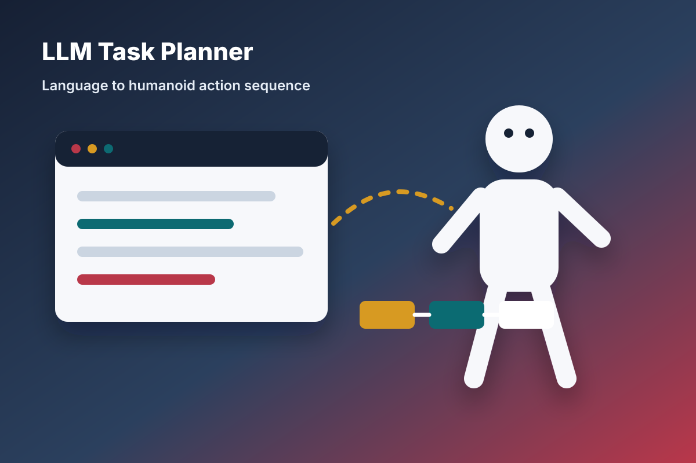
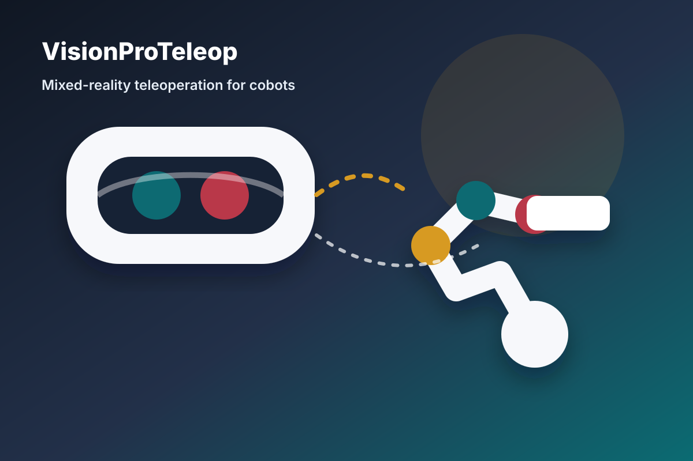
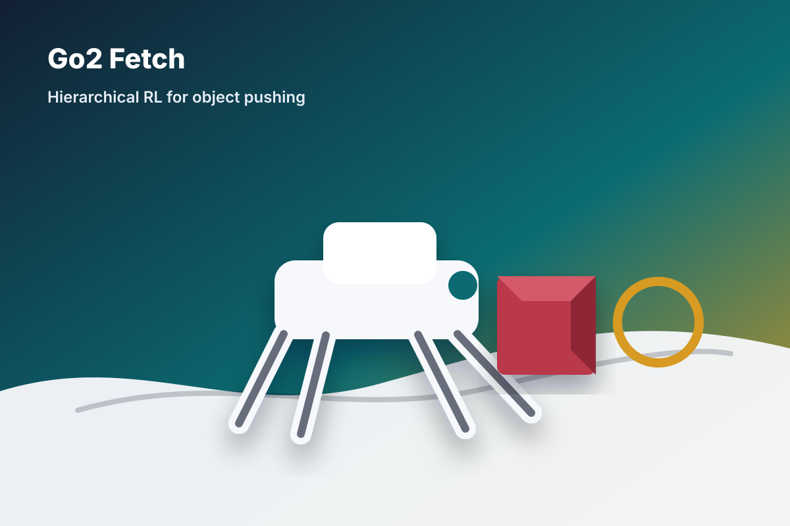
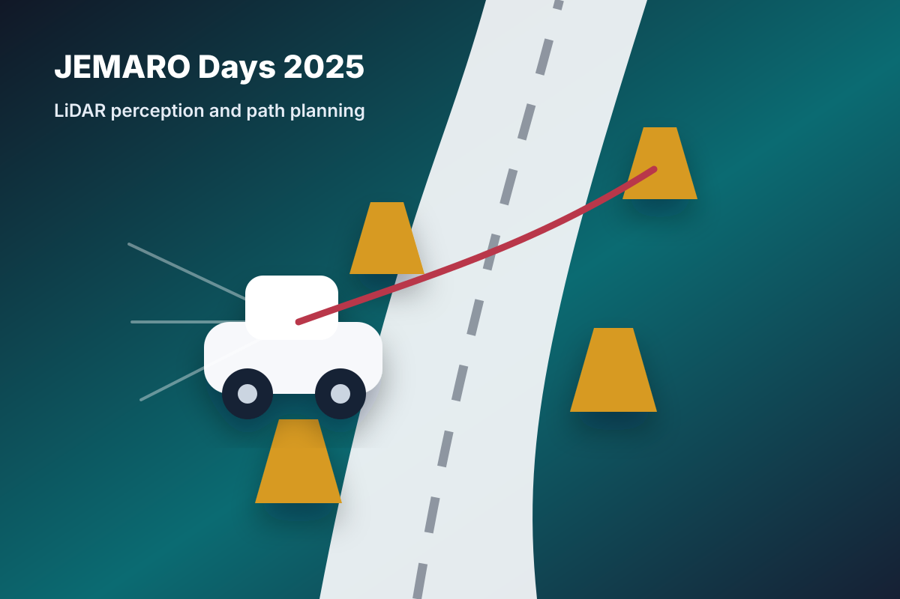

Collaborative robotics
Physical human-robot collaboration, teleoperation, and robot assistance under uncertainty.
Robotics - AI - Human-Robot Interaction
A compact overview of selected robotics projects, from deep active inference for collaborative manipulation to humanoid planning, mixed-reality teleoperation, reinforcement learning, and autonomous driving challenge work.
Overview
Physical human-robot collaboration, teleoperation, and robot assistance under uncertainty.
Deep active inference, hierarchical reinforcement learning, and language-driven task planning.
ROS 2 systems, perception pipelines, real robot experiments, and competition-ready integration.
Projects

Master thesis - pHRC
Real-time deep active inference for physical human-robot collaboration with a Franka Research 3 arm.

Humanoids - task planning
Natural-language task planning for humanoid robot behaviors using an LLM-guided planning interface.

Teleoperation - mixed reality
Apple Vision Pro teleoperation pipeline for collaborative robots with hand tracking, robot feedback, and ROS 2 control.

Reinforcement learning - quadruped
Hierarchical reinforcement learning for autonomous object pushing with a Unitree Go2 robot.

Autonomous driving - ROS 2
ROS 2 LiDAR cone detection and path planning for a real autonomous car challenge, built by the first-place team.